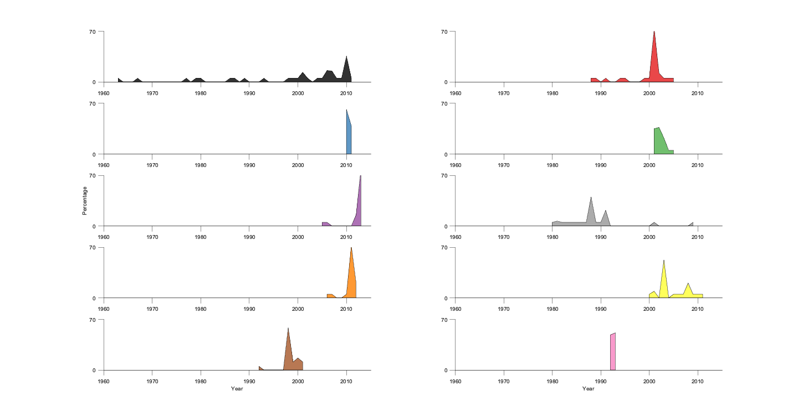
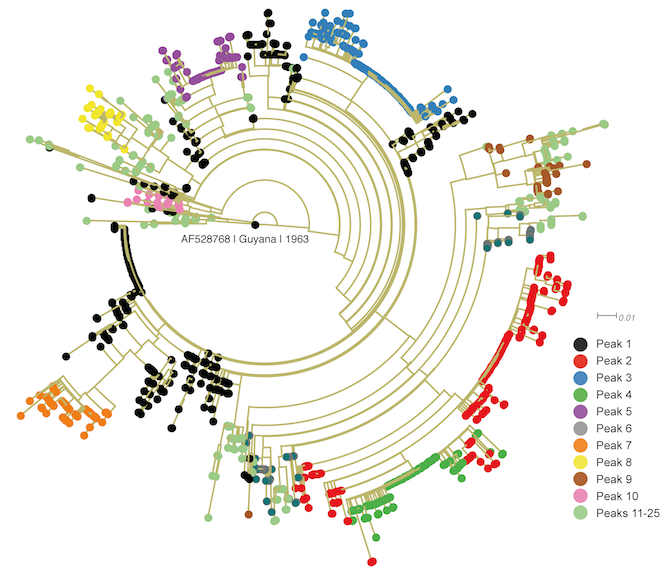
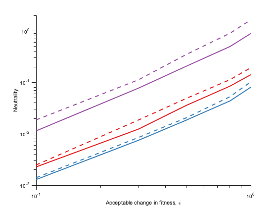

Contents
- 1. Preprocessing of the PV sequence data downloaded from NCBI
- 2. Inferring the model representing the prevalence landscape of vp1 using ACE
- 3. Statistical validation of the inferred model
- 4. Analysis of local peaks in the vp1 prevalence landscape
- 5. In silico predicted energy vs in vitro replicative fitness measurements
- 6. Comparison with other standard methods
- 7. Comparison of vp1 landscape with those of HIV proteins (p24 and gp160)
clear all;close all;clc addpath data addpath functions addpath tree_dendroscope_codes addpath clustering run startup.m set(0,'DefaultAxesFontName','Arial') set(0,'DefaultTextFontName','Arial') set(0,'DefaultAxesFontSize',10) set(0,'DefaultTextFontSize',10) run_scripts = 0; %1 = yes, run the scripts. Note that this would take long time... %0 = no, use saved data.
1. Preprocessing of the PV sequence data downloaded from NCBI
%Sequences downloaded from NCBI with search details "poliovirus"[Organism] are processed to filter the sequences belonging %to each serotype. The number of sequences for each seroptype are computed and FASTA files are made for each serotype. inputFile = 'Polio_ncbi_ns7776.fasta'; preprocessing_seqs_PV(inputFile);
Statistics of the PV sequence data
PV1_FastaFile = 'Human_poliovirus1.fasta';
[msa_vp1, header_vp1] = stats_seqs_PV1(PV1_FastaFile);
Obtaining the accession number of each sequence from the header of vp1
for kk = 1:length(header_vp1) indx_pipe = find(header_vp1{kk}=='|'); accession_number{kk} = header_vp1{kk}(indx_pipe(3)+1:indx_pipe(4)-3); end
Using the accession number of each sequence to obtain information from the NCBI database, which is missing in the header
if run_scripts == 1 [title,journal,country,year_vp1] = ... extract_info_from_accession_number_protein(accession_number); else load title_papers_vp1 load journal_vp1 load country_vp1 load year_vp1 end
Performing PCA of similarity matrix to distinguish between vp1 sequences that are wild-type and vaccine-derived poliovirus (VDPV)
[msa_vp1_wt,seqs_wt] = analysis_similarity_matrix(msa_vp1); msa = msa_vp1_wt; [Nseq,Npos] = size(msa); save msa_vp1_wt msa %saving the wild-type vp1 MSA
2. Inferring the model representing the prevalence landscape of vp1 using ACE
% Code for running ACE is freely available at <https://github.com/johnbarton/ACE>.
ACE input: Single and double mutant probabilities in the MSA
% Generating extended binary Potts MSA entropy = 0.9; protein = 'vp1'; [msa,msa_aa_ex,phi_curr,phi_cumulative,cross_prod,mutant_order,true_indices,... total_length, protein_length_aa, diff_amino_site_length_RawMSA, bin_matrix] ... = generate_msa_binary_potts(entropy,'msa_vp1_wt.mat',protein); save data_vp1 %Saving data (to be used later) [ns,ls] = size(msa); %original [ns_ex,ls_ex] = size(msa_aa_ex); %extended binary fprintf('-----------------------------------------------------------------------------------\n') fprintf('Length of amino acid MSA = %d\n',Npos) fprintf('Length of amino acid MSA (after removing 100%% conserved sites) = %d\n',ls) fprintf('Length of corresponding binary extended Potts MSA = %d\n',ls_ex) fprintf('-----------------------------------------------------------------------------------\n') % Saving the single and double mutant probabilities in the MSA in a format acceptable for ACE delete correlations_ACE_vp1.p save_correlations_ACE(msa_aa_ex,phi_curr,phi_cumulative,protein)
----------------------------------------------------------------------------------- Length of amino acid MSA = 302 Length of amino acid MSA (after removing 100% conserved sites) = 163 Length of corresponding binary extended Potts MSA = 208 -----------------------------------------------------------------------------------
ACE output: Maximum entropy model parameters (fields and couplings)
% Use the p file obtained in the previous step, which comprises the correlations, as input to ACE algo. The output % "vp1-learn.j" consists of the model parameters. We save this text file in excel format and construct a model-paramters % matrix "H" which consists of inferred fields on its diagonal and inferred couplings on the upper triangular matrix. H = ConstructHmatrix_couplings('vp1-learn.xlsx',ls,phi_curr,phi_cumulative);
Generating samples from the inferred model using a Markov Chain Monte Carlo (MCMC) method
% ACE can generate samples from the predicted model using MCMC method. % Three outputs: % 1. vp1-sampler.p: the single and double mutants observed in the generated MCMC samples % 2. vp1-mutdist-sampler.comp: the probability of mutations per sequence in the generated MCMC samples % 3. vp1-sampler-msa.p: MCMC samples generated using the inferred model (20000)
3. Statistical validation of the inferred model
% Comparison of model and MSA statistics % Single and double mutant probability in the MSA freqs_data = 'vp1-data.xlsx'; %Excel version of "correlations_ACE_vp1.p" which was the input given to ACE % Single and double mutant probability in the generated MCMC samples freqs_sampler = 'vp1-sampler.xlsx'; %Excel version of "vp1-sampler.p" obtained as an output from ACE % Probability of mutations per sequences in the MSA, saved in "generate_msa_binary_potts.m" mutdist_data = 'vp1-mutdist-data.xlsx'; % Probability of mutations per sequences in the generated MCMC samples mutdist_sampler = 'vp1-mutdist-sampler.xlsx'; %Excel version of "vp1-mutdist-sampler.comp" obtained as an output from ACE % For triple mutant probability in the MSA and the MCMC samples input_configurations_sampler = 'vp1-sampler-msa.xlsx'; %Excel version of "vp1-sampler-msa.p" obtained as an output from ACE input_data_file = 'data_vp1.mat'; %Data saved after generating the binary extended Potts model if run_scripts == 1 [p2_data,p2_sampler] = getting_two_point_connected_correlations(input_configurations_sampler,input_data_file); [p3_data,p3_sampler] = getting_three_point_connected_correlations(input_configurations_sampler,input_data_file); else load cov_vp1_2pt.mat load cov_vp1_3pt.mat end % Plots color = blue; markersize = 4; plot_one_and_two_point_correlations(ls,freqs_data,freqs_sampler,color,markersize) plot_three_point_correlations(p3_data,p3_sampler,color,markersize) plot_mutdist(mutdist_data,mutdist_sampler,color) plot_pmf_most_prev_aminoacids(input_configurations_sampler,input_data_file) plot_two_point_connected_correlations(p3_data,p3_sampler,color,markersize) plot_three_point_connected_correlations(p3_data,p3_sampler,color,markersize)
4. Analysis of local peaks in the vp1 prevalence landscape
Determining the number of local peaks in the vp1 prevalence landscape
if run_scripts == 1 determine_local_peaks(input_data_file,H) else load vp1_peaks end %Plotting peak rank vs fraction of sequences in each peak data_peaks = 'vp1_peaks'; plot_rank_peaks(data_peaks,H,input_data_file) %data related to peaks and their rank is saved in 'vp1_peaks_rank.mat'
no_of_peak_seqs_vp1 =
25
Antigenic analysis of local peaks
data_peaks_rank = 'vp1_peaks_rank.mat';
peaks_antigenic_analysis(input_data_file,data_peaks_rank)
Geographical analysis of local peaks
data_country_vp1 = 'country_vp1.mat'; %information obtained from NCBI using the accession number as shown in Section 1. data_year_vp1 = 'year_vp1.mat'; %information obtained from NCBI using the accession number as shown in Section 1. dist_geographical_peaks = peaks_geographical_analysis(input_data_file,data_peaks_rank,data_country_vp1,data_year_vp1); % The information provided in "dist_geographical_peaks" can be used to make a figure similar to Figure 3a (reproduced % below for completeness).
Temporal analysis of local peaks
peaks_temporal_analysis(input_data_file,data_peaks_rank,data_country_vp1,data_year_vp1);
Zero-temperature Monte Carlo computational method to identify pathways between the local peaks
if run_scripts == 1 Pathways_peaks = ZeroTempMCSim(input_data_file,data_peaks_rank); else load Pathways_peaks end % "Pathways_peaks" is a 10x10 matrix showing the pathways connecting the top 10 most-populous peaks in the landscape. We % plotted these pathways in Figure 4 (reproduced below for completeness) using the web-version of the Circos plot available % at http://mkweb.bcgsc.ca/tableviewer/visualize/
5. In silico predicted energy vs in vitro replicative fitness measurements
Peak 1 only
%Data saved after generating the binary extended Potts model for sequences in peak 1 only data_peak1 = 'data_vp1_peak1'; %Model parameters for sequences in peak 1 only H_peak1 = 'H_vp1_peak1'; energy_vs_fitness_peak1(data_peak1,H_peak1)
All except peak 1
%Data saved after generating the binary extended Potts model for sequences from all peaks except peak 1 data_nonpeak1 = 'data_vp1_nonpeak1.mat'; %Model parameters for model including sequences from all peaks except peak 1 H_nonpeak1 = 'H_vp1_nonpeak1.mat'; energy_vs_fitness_nonpeak1(data_nonpeak1,H_nonpeak1)
rho =
-0.5084
pval =
0.0034
6. Comparison with other standard methods
Phylogenetic tree
% PASTA v1.6.4, software freely available at https://github.com/smirarab/pasta, was used to construct a maximum-likelihood % phylogenetic tree (Figure 5A) using the VP1 fasta file "vp1_v5_header_peak_acc_country_year.fasta". The header of this FASTA % file is modified to incorporate peak information which is beneficial in coloring the sequences. % The modified format is as follows: % |Peak associated with the sequence|Accession number of the sequence|Sampling country of the sequence |Sampling year of the sequence| % PASTA automatically selects the appropriate parameters for tree estimation based on the provided sequence data. The % resulting phylogenetic tree is stored in "*.tre" file. % Dendroscope v3.5.9, software freely available at http://dendroscope.org/, was used for visualizing this constructred % phylogenetic tree and re-rooting it with the earliest available sequence (accession number: AF528768). The rectangular % and circular phylogram layouts available in Dendroscope were used for visualization. The sequences (that form the leaves % of the tree; reproduced below for completeness) were colored using the code "code_coloring_seqs_in_tree_wrt_peaks.txt". % In Dendroscope, after loading the "*.tre" file and re-rooting it, click Window>Command Input, paste the code in the % opened window, and click "Apply".

Standard clustering methods
%K-means clustering if run_scripts == 1 Custering_output_vs_peaks_Kmeans = clustering_Kmeans(input_data_file,data_peaks_rank); else load Custering_output_vs_peaks_Kmeans.mat end %Hierarchical clustering if run_scripts == 1 Custering_output_vs_peaks_hierarchical = clustering_hierarchical(input_data_file,data_peaks_rank); else load Custering_output_vs_peaks_hierarchical.mat end %Spectral clustering if run_scripts == 1 Custering_output_vs_peaks_spectralClustering = clustering_spectral(input_data_file,data_peaks_rank); else load Custering_output_vs_peaks_spectralClustering.mat end % The output "Custering_output_vs_peaks_xyz" is a matrix with element (i,j) representing percetage of peak i sequences % in the cluster j formed using the clustering method xyz. % Each script above saves a csv file that comprises the data in a format which can be used to plot heatmaps in Python % as shown in Figure 6b (reproduced below for completeness). The Python code "heatmap_annotation_xyz.py" to construct % the heatmaps for method xyz is also provided in this package. This code is written in Python 2.7 and requires the % seaborn package available at <https://seaborn.pydata.org/>.
7. Comparison of vp1 landscape with those of HIV proteins (p24 and gp160)
Autocorrelation
% Computing autocorrelation of each protein landscape %Data of each protein landscape data_peak1 = 'data_vp1_peak1'; data_p24 = 'data_p24'; data_gp160 = 'data_gp160'; %Model parameters of each protein landscape H_peak1 = 'H_vp1_peak1'; H_p24 = 'H_p24'; H_gp160 = 'H_gp160'; if run_scripts == 1 %D = 5 ak_vp1_D5 = compute_autocorrelation_landscape(data_peak1, H_peak1, 5); ak_p24_D5 = compute_autocorrelation_landscape(data_p24, H_p24, 5); ak_gp160_D5 = compute_autocorrelation_landscape(data_gp160, H_gp160, 5); %D = 30 ak_vp1_D30 = compute_autocorrelation_landscape(data_peak1, H_peak1, 30); ak_p24_D30 = compute_autocorrelation_landscape(data_p24, H_p24, 30); ak_gp160_D30 = compute_autocorrelation_landscape(data_gp160, H_gp160, 30); else load autocorrelation_vp1_peak1_D5.mat load autocorrelation_vp1_peak1_D30.mat load autocorrelation_p24_D5.mat load autocorrelation_p24_D30.mat load autocorrelation_gp160_D5.mat load autocorrelation_gp160_D30.mat end % Plot plot_autocorrelation_comparison(ak_vp1_D5,ak_vp1_D30,ak_p24_D5,ak_p24_D30,ak_gp160_D5,ak_gp160_D30)
Neutrality
% Computing neutrality of each protein landscape data_peak1 = 'data_vp1_peak1'; data_p24 = 'data_p24'; data_gp160 = 'data_gp160'; if run_scripts == 1 %L = 500 mean_hamming_distance_max_vp1_L500 = compute_neutrality_landscape(data_peak1,500); mean_hamming_distance_max_p24_L500 = compute_neutrality_landscape(data_p24,500); mean_hamming_distance_max_gp160_L500 = compute_neutrality_landscape(data_gp160,500); %L = 1000 mean_hamming_distance_max_vp1_L1000 = compute_neutrality_landscape(data_peak1,1000); mean_hamming_distance_max_p24_L1000 = compute_neutrality_landscape(data_p24,1000); mean_hamming_distance_max_gp160_L1000 = compute_neutrality_landscape(data_gp160,1000); else load mean_hamming_distance_max_vp1_peak1_L500.mat load mean_hamming_distance_max_vp1_peak1_L1000.mat load mean_hamming_distance_max_p24_L500.mat load mean_hamming_distance_max_p24_L1000.mat load mean_hamming_distance_max_gp160_L500.mat load mean_hamming_distance_max_gp160_L1000.mat end % Plot plot_neutrality_comparison(mean_hamming_distance_max_vp1_L500, mean_hamming_distance_max_vp1_L1000, ... mean_hamming_distance_max_p24_L500, mean_hamming_distance_max_p24_L1000, ... mean_hamming_distance_max_epsilon_gp160_L500, mean_hamming_distance_max_epsilon_gp160_L1000)